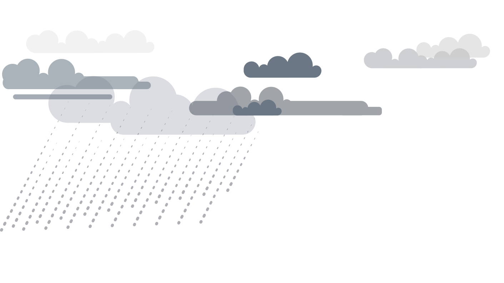
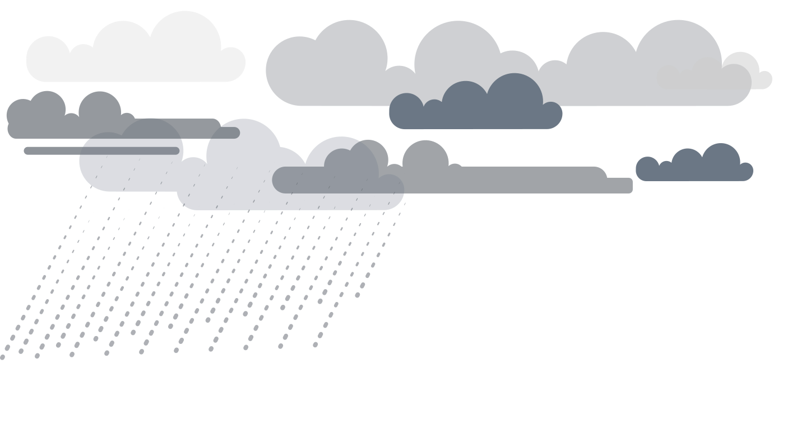
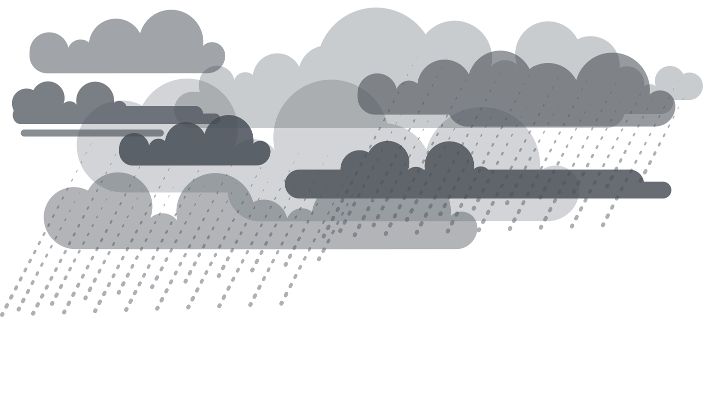

Described as being somewhat introverted and reserved whilst at school. Relatively insecure and suffered some bouts of anxiety but otherwise was considered hardworking and studious.
SELECTAlthough they received encouragement from their parents to do well in school, they were considered unpredictable and had a tendency to get into trouble.
SELECTAlways considered a ‘problem child’ growing up. Attendance at school was poor. Often got into fights with others in their neighborhood, which would ultimately result in them being sent to youth detention centers.
SELECTDescribed as being somewhat introverted and reserved whilst at school. Relatively insecure and suffered some bouts of anxiety but otherwise was considered hardworking and studious. Parents were always highly supportive.
Was able to get the desired grades to get into university and was also able to hold down a part-time job as a sales assistant alongside their studies. They are able to form meaningful relationships and were considered to be social by their peers.
Considered unpredictable when they were at school. Although they received encouragement from their parents to do well, they started to hang out with the ‘wrong sort of people’ at school and as a result their behaviour became somewhat problematic. They started smoking cannabis with friends when they were 16. They now work full-time at a local restaurant.
Often considered a ‘problem child’ growing up. Their attendance at school was poor and they often got into fights with others in their neighbourhood which would ultimately result in them being sent to youth detention centres. During their adolescence, their family often threw them out of the house as a result of their aggressive behaviour. They began to drink alcohol heavily from the age of 14 and began abusing cocaine in their early adult years.
They experienced their first episode of psychosis (FEP) when they were 19 years old. Their parents initially noticed them behaving strangely and at first suspected them of suffering from depression. They became very withdrawn from their friends and family and would often stay in their room for days at a time. They also experienced visual hallucinations. They started worrying that everyone around them was talking about them behind their back and found it hard to ‘organize their thoughts’ when they were studying at school.
During their FEP, their became aggressive and isolated themselves from their friends and family at home. Although their family tried to help them and felt that they were going through an intense period of stress they often found their behaviour challenging and out-of-control. Eventually their family took them to a psychiatrist and they were admitted to hospital with acute psychosis.
They were followed closely by the Assertive Community Team (ACT) . On one occasion (after a period of especially heavy substance abuse) they were admitted to hospital because they was seen wandering around the streets at night acting manically and seeming to speak to someone who wasn’t there. Their family did not visit them during their stay in hospital.
They had the impression that something was wrong, so their parents accompanied them to a psychiatrist consultation. They were initially suspected of having depression and given some anti-depressants. However, as their hallucinations persisted, they returned for another consultation.
During the second consultation, the psychiatrist diagnosed them with schizophrenia. They were initially concerned that this could have an impact on the rest of their life. However, after the initial shock of diagnosis they were relieved that a name had been put to what they were experiencing. They wanted to focus on managing their condition.
They were diagnosed with schizophrenia during their three-month stay in hospital. They attended group therapy sessions and experienced benefits to their symptoms when receiving anti-psychotic treatment.
Their family was glad that they had finally received help and hoped that the treatment would stabilise their behaviour in the future.
They were told of their diagnosis of schizophrenia during their stay in accident and emergency but were unable to acknowledge it due to their state of mania at the time. Upon admission into the hospital they acted aggressively towards the staff and were quickly initiated onto anti-psychotics, which they often refused to take. They were not unknown to the staff members and many considered them as a ‘red flag’ patient.
They found taking their daily medication easy and found it easy to integrate back into their college life and often went out socializing with their friends. Their friends were aware of their diagnosis of schizophrenia and were very supportive. Exam pressures often resulted in them feeling highly stressed and anxious but they were able to achieve good grades.
They started to smoke marijuana in order to relax their nerves during exam period.
They returned home to their family after their stay in hospital. Every two weeks, they returned to the hospital to receive a long-acting injectable. During these consultations their doctor asks how they have been getting on. Their family tends to accompany them to these consultations but if no one is available they are able to attend on their own. They also attend group therapy sessions as well as cognitive behavioural therapy (CBT) with a psychiatrist.
They were able to return to work but occasionally smoked cannabis with their friends. They were happy that they were able to get their life back on track.
Whenever they relapsed, they became withdrawn and isolated from those around them. Their family was frightened for them as they were not able to take care of them whilst they were staying in college accommodation. Their friends were also very concerned for them and often didn’t hear from them for days at a time.
They found it difficult to get out of bed in the morning, but finally went to the doctor with the encouragement of their friends.
Whenever they relapsed, they began smoking cannabis more frequently in an effort to self-medicate. This caused arguments between themselves and their family. They felt it helped with their symptoms for a while but then they always seemed to come back. They experienced hallucinations and often heard voices speaking to them. Their family has tried to take them to a psychiatrist consultation but they refused. They felt that everyone was out to get them.
Whenever they relapsed, their behaviour became increasingly aggressive and manic. They often believed that people wanted to kill them and were quick to start fights with people. As a result they were quickly re-admitted into hospital.
This cycle of refusing to take their medication and being re-admitted into hospital continued for many years.
After their first relapse, their treatment was changed to an alternative antipsychotic. As a result, their mood became more stable and they were able to go out with their friends again. They still heard voices on occasion but they were able to recognise these as symptoms of their condition. Their friends and family were very supportive whenever they relapsed but they remained mostly independent.
They began receiving treatment at a slightly increased dose and attended group-therapy sessions which they found to be very beneficial. They still on occasion experienced hallucinations and heard voices which frightened them.
After a few false starts, they were able to achieve a qualification from home after dropping out of college, and went on to find a job in the city. They still have close friends and see them often but still suffer occasionally from depression and unexplained anxiety.
They take their medication on a daily basis and knows to recognise the warning signs of a relapse. When this happens they makes sure to inform their close friends and family and attend a consultation with a psychiatrist.
They were able to find a new job in a local cafe. As their family is not available all of the time to care of them, they now have a social worker who helps them with daily tasks. They continue to attend consultations to receive their treatment and their psychiatrist often asks how they are feeling. They also suffer from memory problems.
They still experience relapses on occasion - especially after a period of high stress - but they have gotten better able to deal with these relapses over time.
They experience relapses frequently. Because of their poor compliance in taking their medication, they are often admitted into hospital. When they leave hospital, their behaviour is so manic and aggressive that it is not long before they are re-admitted.
They are homeless and no longer have contact with their family.